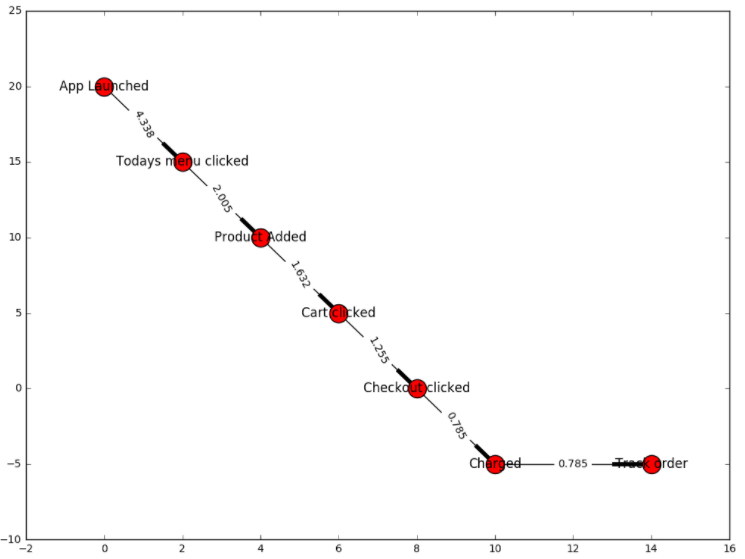
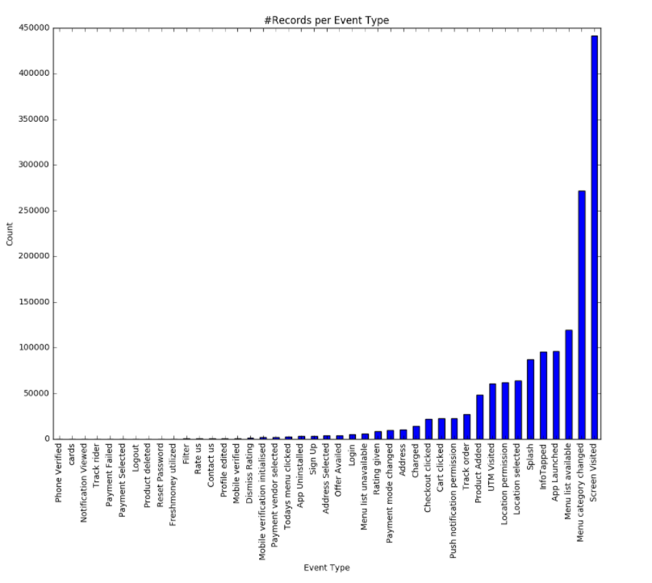
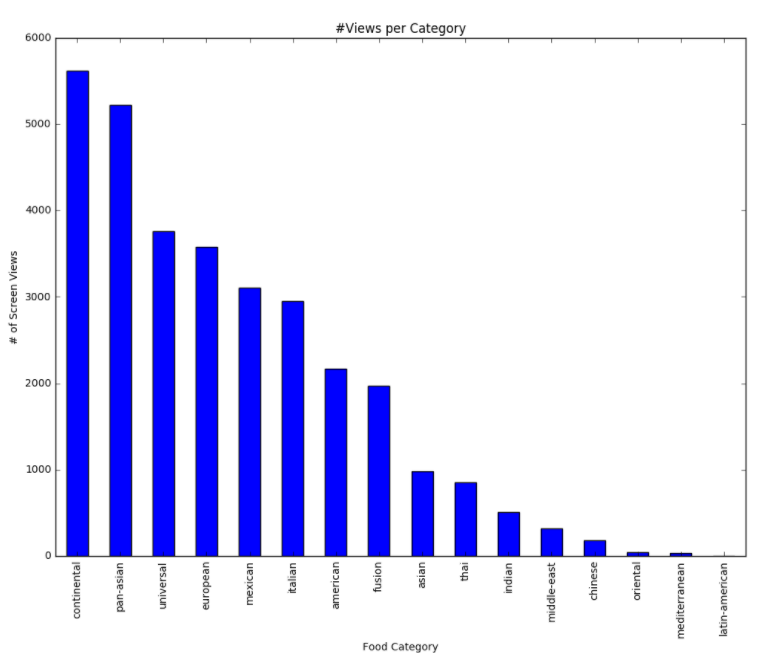
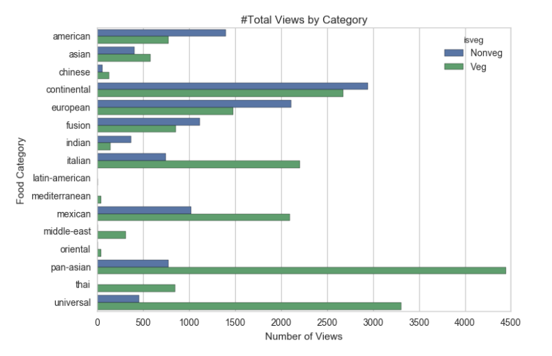
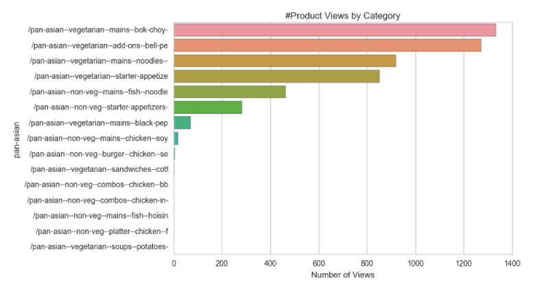
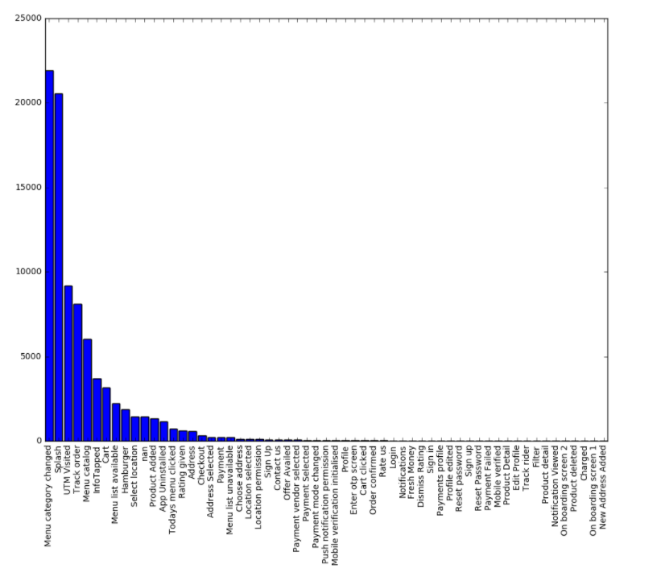
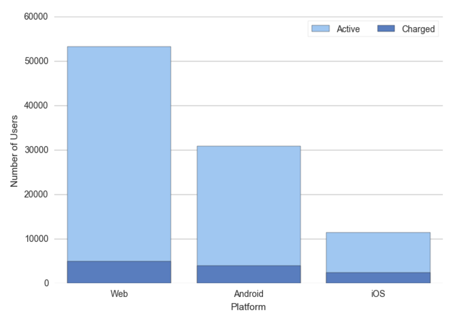

by Inncretech
In this post, we analyze event data about users’ journey to different app screens and finally, buying/checking out a product. The data was obtained from the events repository of a marketing analytics company which offers an sdk for app developers to generate events from iOS, Android and Web. Based on the time series of events for each user, we are able to identify the number of screens and most common paths that the users are taking before purchasing a product. We analyzed what the best selling products were, which screens lead to most users dropping off of the app, and present our findings and recommendations below.
We assumed a typical path a user would have to follow in order to place an order, and analyzed app interaction data for two days (from 10-01-2016 to 10-03-2016) to find the nodes where our users drop off the most. We can see that only 4.3% of the users who launched the app (40253) went on to look at the “Today’s Menu” (1746), and only 0.7% of the users who launched the app went on to successfully place an order.

“Screen Visited” seems to be the most frequently occurring event on our app, followed by the event “Menu Category Changed”. We can also observe that over the course of two days less than 15000 transactions have occurred (the event “Charged” has a frequency of 14,417).

Users often shift through food from different cuisines before making a final choice on what to purchase. Over here, we observe that Continental with a count of 5620, is the food category with the highest number of user views. Latin-American dishes were the least popular (with a view count of only 1).

Pan-Asian seems to be the most popular choice among people who’re interested in vegetarian food. And for non-veg eaters, the most popular is Continental.

Over here we drill down to the product level for two of the most popular categories, continental and pan-asian. We can observe that number of continental food items that are viewed far exceed the number of pan-asian food items.

We analyzed user sessions to identify the events/screens after which a user stops using the app (i.e. terminal event). The event “Menu Category Changed” seems to be the terminal event with the highest frequency (21899).

For the time period of two days (from 10-01-2016 to 10-03-2016), we noticed that the vast majority of unique users (53,196) accessed the app on Web. Of these users, 4940 users had placed orders and were charged. The second most popular platform is Android, with a unique active user count of 30,884, of which 4001 users were charged for their orders.

We see that several users close the app while making a decision as they switch between different menu categories. When a user is switching between categories more than once, they could be notified about a product which is the best seller, meal of the day, what similar users are ordering or a discount in order to help the user make an impulse decision, which could help increase the conversion rate.